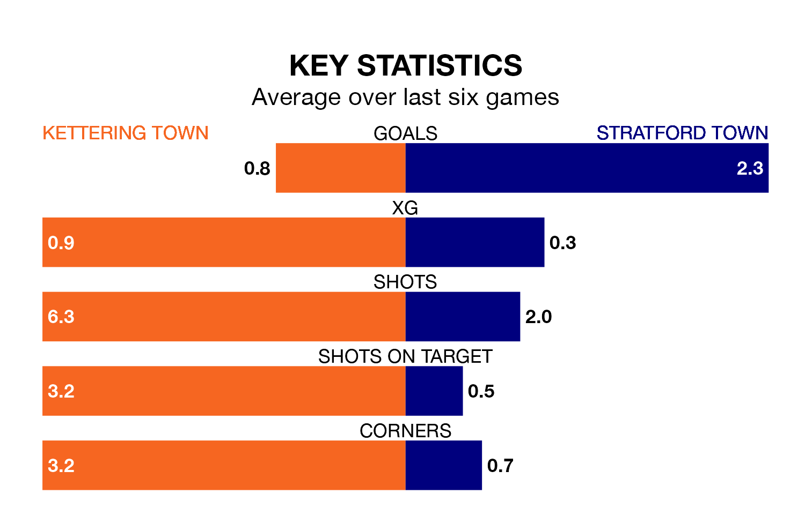

Struggling Kettering Town face Stratford Town at Latimer Park on Saturday looking to build on a win in their last league outing.
After securing all three points with a 2-0 victory over AFC Sudbury on February 27, the Poppies sit 20th in the Southern League Premier Central.
They travel to play a Stratford side fifth in the standings, who also won their last match, 2-1 against Berkhamsted, on March 2.
With 58 goals in 31 games so far this season, Stratford are scoring more than average in the league with 1.9 goals per game. And they are conceding at an average rate, letting in 48 goals at a rate of 1.5 per game.
Kettering, meanwhile, are below average scorers, with 1.2 goals per game, compared to a league average of 1.5. They have conceded 2.1 goals per game.
In the last 10 years, Kettering and Stratford have played each other on eight occasions. Kettering won five of them and Stratford three.
On average, the Poppies scored 2.4 goals and Stratford Town 1.5 in those matches.
Their last meeting was on April 27 2019, when Kettering won 5-1 at home.
Kettering Town are in disappointing form in the Southern League Premier Central, with one win and two draws from their last six games.
With five wins and one loss over that period, Stratford Town's form is much better – they have taken 15 points from 18, compared to the Poppies' five.
Updated: 09:34 (UTC), 08/03/24